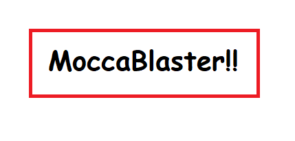

DITA user manual
MoccaBlaster coffee maker

This short and concise user manual for a fictitious coffee maker was the final assignment for a university course on structured documentation and DITA. This was my first foray into using Oxygen XML Editor and authoring structured content.
The assignment was to use Oxygen XML Editor to create a user manual for an imaginary coffee maker, MoccaBlaster. The project had to include two separate models of the same product, X210 and EX2000, and the PDF output for both had to be accessible from a single DITAMAP file. The point was to practice single sourcing and conditional processing profiles (DITAVAL files).
The primary focus of this project was on the structure of the document rather than the textual content therein. Wry humour and imagination were the fuelling forces behind the actual text, which I hope all readers keep firmly in mind. The STE specification, for instance, was not consulted for this project, nor was any guide or moral code on the kind of language actually appropriate for technical writing.
Despite initially considering publishing the project in all its unedited glory, I did tweak the text and structure before publication. I decided to do so because it has been a couple of years since I completed the then-final version of this. Therefore, the original version does not adequately reflect my current level of writing.
To view this project, you can download the PDF outputs of each bookmap from the links below.
The version with EX2000 omitted:
Download MoccaBlaster X210 DITA bookmap PDF.
The version with X210 omitted:
Download MoccaBlaster EX2000 DITA bookmap PDF.
Conversely, if you have software that can open .DITA files, you can download the entire project in a compressed file format from the following link:
Download the compressed files (MoccaBlaster.zip).
To check out the assignment and the contents of the structured documentation course, please visit the lecturer’s website.